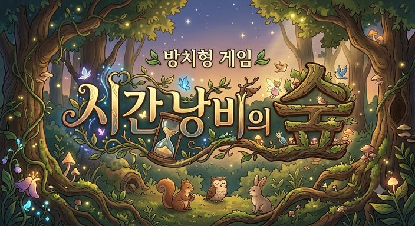

모험가
Lv.1
자동
0 / 0
0 / 0
공격
0
방어
0
골드
0
처치
0
가방
0
메뉴
채널
1
인원
1 / 5
채널 누적 처치
0
채널…
이동
중간보스
100
중간보스 소환
최종보스
300
최종보스 소환
기여도
가방
칸을 누르면 장착한다
닫기
메뉴
닫기
◀
▶
▲

숲으로 들어가기
계정 만들기
Google · 준비 중
성별
남자
여자
계정 만들기
돌아가기
제작 · 유준형
v2.0